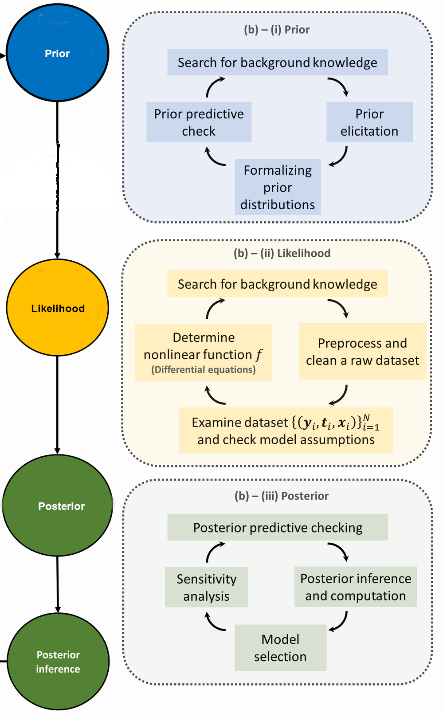

37. Guide to Jupyter Book markdown#
Here we give examples of how to do things in JB markdown.
37.1. *Marking a section in a different color#
Begin the highlighted section with <div class="highlight-section"> and end it with </div>.
Add an asterisk before a title to indicate a section that can be skipped (use \* if you want the asterisk close to the title).
At present this puts the highlighted section in a box, which means additional margins on the left and right (including any title).
37.2. Frontmatter for markdown files#
At the top of any md file include:
---
jupytext:
formats: md:myst
text_representation:
extension: .md
format_name: myst
kernelspec:
display_name: Python 3
language: python
name: python3
---
37.3. Labeling and referencing a section#
Down below we labeled the Macros section with
(sec:Macros)=
## Macros
Now we can reference that section as Macros using {ref}`sec:Macros` .
37.4. Admonitions#
Here we give examples of various admonitions that are pre-defined. You can either use three backticks ``` or colons ::: to delimit the admonitions (we use colons here to make it easy to use backticks for the code). If you have nested admonitions, add another backtick or colon to delimit outer layes (see the checkpoint questions example).
Note the :class: references that invoke particular styles (e.g., colors) and dropdowns.
Notes#
Note
Trivia: “Student” was the pen name of the Head Brewer at Guiness — a pioneer of small-sample experimental design (hence not necessarily Gaussian). His real name was William Sealy Gossett.
comes from
:::{note}
Trivia: "Student" was the pen name of the Head Brewer at Guiness --- a pioneer of small-sample experimental design (hence not necessarily Gaussian). His real name was William Sealy Gossett.
:::
Warnings#
Warning
Although we alluded to the analogy between inserting a complete set of states and marginalization above this analogy breaks down in general. It’s ok to use this as a mnemonic though.
comes from
:::{warning}
Although we alluded to the analogy between inserting a complete set
of states and marginalization above this analogy breaks down in
general. It's ok to use this as a mnemonic though.
:::
Checkpoint questions#
Checkpoint question
What is the probability to find particle 1 at \(x_1\) while particle 2 is anywhere?
Answer
\(\int_{-\infty}^{+\infty} |\psi(x_1, x_2)|^2\, dx_2\ \ \) or, more generally, integrated over the domain of \(x_2\).
comes from
::::{admonition} Checkpoint question
:class: my-checkpoint
What is the probability to find particle 1 at $x_1$ while particle 2 is *anywhere*?
:::{admonition} Answer
:class: dropdown, my-answer
$\int_{-\infty}^{+\infty} |\psi(x_1, x_2)|^2\, dx_2\ \ $ or, more generally, integrated over the domain of $x_2$.
:::
::::
and to give a hint:
Checkpoint question
Construct your own example of \(\prob(x|y) \neq \prob(y|x)\)
Possible answers
The probability that there is a cloud in the sky given that it is raining is not the same as the probability that it’s raining given that there is a cloud in the sky.
comes from
::::{admonition} Checkpoint question
:class: my-checkpoint
Construct your own example of $\prob(x|y) \neq \prob(y|x)$
:::{admonition} Possible answers
:class: dropdown, my-hint
The probability that there is a cloud in the sky given that it is
raining is not the same as the probability that it's raining given
that there is a cloud in the sky.
:::
::::
You can combine these examples to have a hint and an answer (just stack the internal admonitions).
Exercises and solutions#
Exercise 37.1
Derive Eq. (4.24) using the rules of probability calculus and inference.
and
Solution to Exercise 37.1
Hint: see part of the solution to Exercise 4.7.
come from
:::{exercise}
:label: exercise:ppd_definition_b
Derive Eq. {eq}`eq_ppd` using the rules of probability calculus and inference.
:::
and
::::{solution} exercise:ppd_definition_b
:label: solution:ppd_definition_b
:class: dropdown
*Hint:* see part of the solution to {ref}`exercise:coin_ppd`.
::::
Note the use of :label: exercise:ppd_definition_b that is referenced by the solution and also the reference to exercise:coin_ppd.
The tip class#
Parameter Estimation:
Premise: We have chosen a model (say \(M_1\))
\(\Rightarrow\) What can we say about its parameters \(\boldsymbol{\theta}_1\)?
from
:::{Admonition} Parameter Estimation:
:class: tip
Premise: We have chosen a model (say $M_1$)
$\Rightarrow$ What can we say about its parameters $\boldsymbol{\theta}_1$?
:::
Remarks#
Remark 37.1 (Checklist for statistically sound Bayesian inference)
Interact with the experts (i.e., statisticians, applied mathematicians).
Incorporate all sources of experimental and theoretical errors.
Formulate statistical models for uncertainties.
Use as informative priors as is reasonable; test sensitivity to priors.
Account for correlations in inputs (type x) and observables (type y).
Propagate uncertainties through the calculation.
Use model checking to validate our models.
comes from
:::{prf:remark} Checklist for statistically sound Bayesian inference
:label: remark:BayesianWorkflow:buqeye-checklist_b
1. Interact with the experts (i.e., statisticians, applied mathematicians).
2. Incorporate all sources of experimental and theoretical errors.
3. Formulate statistical models for uncertainties.
4. Use as informative priors as is reasonable; test sensitivity to priors.
5. Account for correlations in inputs (type x) and observables (type y).
6. Propagate uncertainties through the calculation.
7. Use model checking to validate our models.
:::
37.6. External URL references#
The general form is
[name in text](url)
For example, to point to Dick Furnstahl’s home page, use
[Dick Furnstahl](https://physics.osu.edu/people/furnstahl.1)
to get Dick Furnstahl.
37.7. Bibliography references#
BibTeX entries are stored in references.bib. Use the tags defined there for citations.
For example,
{cite}`gelman2013bayesian` Andrew Gelman et al., *"Bayesian Data Analysis, Third Edition"*, Chapman & Hall/CRC Texts in Statistical Science (2013).
will produce
[GCS+13] Andrew Gelman et al., “Bayesian Data Analysis, Third Edition”, Chapman & Hall/CRC Texts in Statistical Science (2013).
The link will take you to the bibliography. In normal usage you would just put the {cite} part, e.g., “Look in up in BDA3 [GCS+13].”
37.8. Equation references#
Here is a simple equation
which was written as
$$
E = mc^2
$$ (eq:JB_tests:Einstein_equation)
To cite this equation we use `{eq}eq:JB_tests:Einstein_equation` which gives (37.1).
What about an aligned equation? It seems we can only (easily) have one equation reference, and to get that we can surround \begin{align} and \end{align} with $$:
$$\begin{align}
A &= B + C \\
D &= E + F
\end{align}$$ (eq:JB_tests:align_test)
produces
Now we can refer to the equation: (37.2).
37.9. Macros#
LaTeX macros are defined in the _config.yml file in two formats, for use with html and pdf output. They can be entered by hand, but a better way to is to use the process_new_macros_for_config_file.py script (just type python process_new_macros_for_config_file.py at the command line), which reads in the macros.sty file as well as _config.yml and outputs a new _config.yml file. For safety this is done in the LaTeX_macros directory.
In macros.sty, the macros are defined as usual with newcommand or renewcommand statements. For example:
\newcommand{\prob}{\mathbb{P}}
\newcommand{\Lra}{\Longrightarrow}
\newcommand{\yth}{y_{\text{th}}}
\newcommand{\yexp}{y_{\text{exp}}}
\newcommand{\p}[1]{p \left( #1 \right)}
Note that you can have arguments as usual (e.g., the \p example).
Even if the macro is text-only, it is only evaluated in LaTeX mode (e.g., like $\macro$).
Testing various definitions: $\prob$, $\yth \Lra \yexp$, $\p{A|B}$ become \(\prob\), \(\yth \Lra \yexp\), \(\p{A|B}\).
37.10. Inserting figures and references to them#
{kind=link}

Fig. 37.1 Shortened caption here.#
from
:::{figure} assets/2048px-Bayesian_research_cycle-mod.png
:height: 600px
:name: fig-BayesianWorkflow-research-cycle_b
Shortened caption here.
:::
The convention is to have the figure files in a subdirectory called figs (that is, a subdirectory of the directory that has the markdown file). We can refer to this figure as Fig. 37.1 using {numref}`fig-BayesianWorkflow-research-cycle_b`
and we get the appropriate hyperlink.